xv has a whopping grand total of two internal
image formats: 8-bit colormapped, and 24-bit RGB. Every image you
load is converted to one of these two formats, as part of the
image loading procedure, before you ever get to see the image.
There are a few crucial differences between these two modes.
In 8-bit mode, you have a colormap, and thus color-editing
changes (see "The Color Editor"
) can happen much more quickly. On the downside, most of the
image editing functions only actually operate on 24-bit images.
(Such as the Algorithms menu, described later in this
section.) If you use these functions, xv will convert the
8-bit image into a 24-bit image, operate on the 24-bit data, and
convert the result back to an 8-bit image. As a result, artifacts
can be introduced from the image conversions. As such, if you're
going to be doing a lot of this sort of thing, switch to 24-bit
mode first.
But I digress...
| 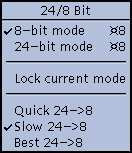 |
This menu lets you see which mode xv is
currently operating in, and lets you change modes. You
can also force xv to remain in the current mode,
and select how the program will convert 24-bit images
into 8-bit images. |

- Forces the program into 8-bit mode when selected.
If you are currently working on a 24-bit image, it will
be converted into an 8-bit image using the selected
conversion algorithm (see below), and the 24-bit data
will be thrown away.
-
- 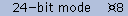
- Forces the program into 24-bit mode when selected.
If you currently working on an 8-bit image, it will be
converted into a 24-bit image and the 8-bit image will be
thrown away. Note that if you are working on a 24-bit
image, switch to 8-bit mode, and switch back to 24-bit
mode, your 24-bit data will have been lost in the
conversions. A dialog box will pop up to alert you of
this potential problem.
-
- 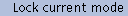
- Normally, xv will switch between 8 and 24-bit
modes based on the image type (if you load a 24-bit
image, it'll switch to 24-bit mode, otherwise it
will use 8-bit mode ). Turning this option on will
force xv to remain in the current mode. One reason
that you might wish to this would be to lock xv
into 8-bit mode so that 24-bit images are shown
dithered with the 'Slow' algorithm (see below), which
produces better looking images on 8-bit displays. (Just
don't try to save the image afterwards!)
-
- Converts 24-bit images to 8-bit images by dithering with
a fixed 6x6x6 RGB colormap. It is the quickest of the
three algorithms, but also generally produces the worst
images. It can also be selected via the '-quick24'
command-line option or X resource.
-
- The default algorithm. Takes about twice as long as the
Fast algorithm. Uses the median-cut algorithm to pick a
set of 256 colors, and then dithers with these colors. It
can be selected via the '-slow24' command-line option or
X resource.
-

- By far and away the slowest of the algorithms. Can take
up to ten times as long as the Slow algorithm. Uses a
cleverer version of the median-cut algorithm to pick a
better set of 256 colors than the slow algorithm. Does
not dither. This might look best if you're going to be
expanding the image by very much, as the dithering in the
other two algorithms becomes very noticeable. You can
also select this option via the '-best24' command-line
option or X resource.
Note that none of the three 24->8 algorithm choices
immediately does anything. They merely select which
algorithm will be used the next time xv feels a need to
convert a 24-bit image into an 8-bit image.
 |
xv now has the ability to run a
number of standard image-processing algorithms on the
current image, or any rectangular portion of the current
image. If there is a current selection rectangle (See
"Selection
Rectangle" ), the algorithm will only affect the
selected area. Otherwise, the algorithms operate on the
entire image. Algorithms are chosen via the Algorithms
menu, and are executed immediately. Algorithms are
cumulative, in that if you run an algorithm on an image,
and then run a second algorithm, the second algorithm
operates on the modified image produced by the first
algorithm. And so on.
See "Adding
Algorithms to xv" for information
on how you can add additional algorithms to this menu.
|
Also, it should be noted that the algorithms operate on 24-bit
images. If you are currently operating on an 8-bit image, and you
run an algorithm, the image will be converted up to 24-bits, the
algorithm will be run, and the result will be converted back to
8-bits using the currently selected 24->8 algorithm. As such,
if you're going to be doing a lot of algorithm-ing, you may find
it faster to temporarily switch to 24-bit mode. Likewise,
if you intend to run multiple algorithms on the same image (say,
a Blur followed by an Emboss ), you should definitely
switch to 24-bit mode, to maintain full 24-bit precision
on the intermediate images (i.e., to prevent noise from being
added to the image by any intermediate 24->8 conversions).
- 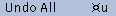
- The (normally dimmed-out) Undo All selection
undoes any and all algorithms that have been run on the
current image. It restores the image to the state it was
in when the first algorithm was executed, and it also
puts xv back into the 8/24-bit mode it was
in.
Keyboard Equivalent: <Meta> u
-
- 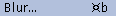
- Runs a convolution over each plane (red, green, blue) of
the image, using a n*n convolution mask consisting
of all 1's. It has the effect of, for each pixel in the
image, replacing it with the average value of all the
pixels in the n*n rectangle centered around the
pixel in question. When you select this command, a dialog
box is opened up to request the value for 'n'.
Values must be greater than or equal to '3', and they
must also be odd (e.g. 3,7,5,9,11). Larger values blur
the image to a greater extent.
Warning! This
algorithm, due to its n^2 nature, can get very
slow as n is increased. Values above '15' aren't
particularly recommended.
Note: This command is a reasonable way to turn
dithered black-and-white images back into some semblance
of the greyscale that they probably originally started
as.
Keyboard Equivalent: <Meta> b
- 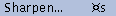
- Runs an edge-sharpening algorithm on the image, which
attempts to maximize contrast between adjacent pixels.
Prompts for a 'strength' value of 0% through 99%.
Keyboard Equivalent: <Meta> s
-
- 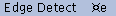
- Runs a convolution using a pair of convolutions, one
which detects horizontal edges, and one which detects
vertical edges. The convolution is done separately for
each plane (red, green, blue) of the image. It is only
done for pixels that have the 3x3 mask fully contained
within the image, to avoid pesky edge conditions. One
note: since it runs an edge detection separately for each
plane of the image, the results are colorful. You'll get
red edges when there are edges in the red plane, yellow
edges when there are edges in the red and green planes,
and so on. If you'd like a traditional grey edge
detection (based on the overall intensity of each pixel),
you should use the Saturation dial in the xv
color editor (See "The
Saturation Control" ) to completely desaturate
all the colors in the image (turning it grey) first.
Then, the results will also be grey.
Keyboard Equivalent: <Meta> e
-
- 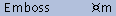
- Runs an algorithm that produces nifty 'embossed' images
by using a variation of the edge detection algorithm. It
produces greyscale (8-bit) images where most of the image
is shown as a medium gray. 'Leading' edges (edges found
on the top and left sides) are shown as a lighter gray,
and 'trailing' edges (bottom and right edges) are shown
as a darker gray. The image wind up looking like
pseudo-3-d, sort of like the Motif toolkit. You can then
use the White dial in the xv color editor
(See "The
White Remapping Control" ) to colorize the image
as you see fit
Keyboard Equivalent: <Meta> m
-
- 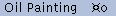
- Does an 'oil transfer', as described in the book
"Beyond Photography", by Holzman. It is a sort
of localized smearing. The basic algorithm is to take a
rectangle (7x7 in this case) centered around the current
pixel, compute a histogram of these (49) pixels, and
replace the current pixel with the 'most popular' pixel
as determined by the histogram.
Keyboard Equivalent: <Meta> o
-

- Blends a rectangular selection out of existence by
replacing the selected area with a radial gradient fill.
Each pixel on the edge of the selection retains its
original color, the pixel in the center is replaced by
the average of all the edge pixels, and all remaining
pixels are replaced by the weighted average of the center
pixel and the edge pixel (along the line that runs
through the center pixel and the pixel being computed).
This
is much easier to see than it is to explain.
Keyboard Equivalent: <Meta> B

- Does arbitrary (smooth) rotation of the entire image (or
the selected region). You will be prompted to enter a
rotation amount, in degrees. Positive values rotate the
image counter-clockwise, negative values rotate the image
clockwise. The Copy Rotate function makes a copy
of the selection, rotates it, and pastes it back on top
of the original.
Keyboard Equivalent: <Meta> t
-
- 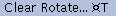
- Also does arbitrary smooth rotation, as with the Copy
Rotate command, but this version clears the original
image (using the 'current color', see "Displaying
Pixel Values" ) before pasting the rotated
version.
Keyboard Equivalent: <Meta> T
-

- Runs a 'pixelization' algorithm, suitable for obscuring
sensitive and/or naughty parts of an image. Pops open a
dialog box which prompts for either a single value 'm',
or a pair of values 'mxn'.
Divides the image (or the selected region) up into m-by-m
squares (if a single value was entered) or m-by-n
rectangles (if a pair of values were entered). Each area
is filled with the average color of all pixels contained
within the area.
Keyboard Equivalent: <Meta> p
-
- 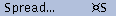
- Runs a 'random spread' algorithm on the selected area of
the image (or the entire image). Pops up a dialog box
which prompts for either a single value 'm', or a
pair of values 'mxn'.
In the case of the single value, each pixel in the image
is swapped with some other random pixel located within a
distance of m pixels from the first pixel. If two
values are entered, each pixel is swapped with another
pixel located within m,n of the original
pixel. This can produce an interesting 'de-rez' effect.
Whether it's useful or not is for you to decide.
Keyboard Equivalent: <Meta> S
-
- 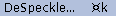
- Runs a despeckling algorithm, also known as a median
filter among image-processing circles. This algorithm
is good at removing minor noise from an image, such as
you'll normally find on scanned-in faxes and the like. It
may also prove useful for de-dithering images, turning
black-and-white dithered images into greyscale images,
and dithered color images into undithered color images.
Note that the Blur algorithm can also be used in
the same way, and may do a better job of un-dithering.
However, the DeSpeckle algorithm generally leaves
edges alone, unlike the Blur algorithm, which
blurs everything uniformly.
This algorithm runs
through the selected area of the image, and for each
pixel in the image, looks at the m-by-m
square centered around the pixel. It replaces the pixel
with the median value of the pixels found in the square.
As with the Blur algorithm, you will be prompted
for a value of 'm'. The value must not be less
than '3', and it must be odd. Larger values have a
greater effect, though '3' should be sufficient for most
purposes.
Keyboard Equivalent: <Meta> k